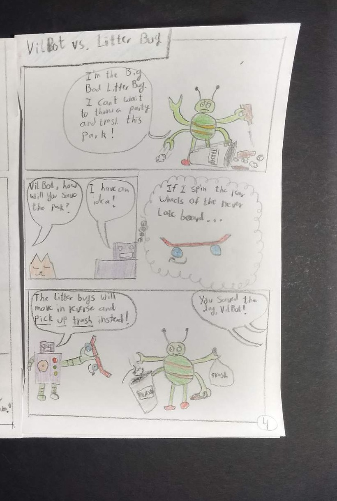

COMICS · LESSON 5 OF 5
Smart Solution in Action: Create Your Final Comic Page
Show the challenge, your hero's choice, the gadget working, and what changes.
- Time / Tiempo: one or two class periods / uno o dos periodos de clase
- You need / Necesitas: your comic, pencil, and coloring supplies / tu cómic, lápiz y materiales para colorear
- Turn in / Entrega: clear photos or one slow video showing the cover and Pages 1 through 4 / fotos claras o un video lento que muestre la portada y las Páginas 1 a 4
What Page 4 needs to show
Your last comic page is a cause-and-effect sequence. A reader should be able to find all four parts without hearing your explanation:
- Challenge: Show what is happening and who or what is affected.
- Hero's choice: Show what your hero notices and decides to do.
- Gadget action: Show the input, process, and output in the scene.
- Visible result: Show what is different because of the action.
Words for today: challenge · affected · cause · effect · process · result
Teacher model: Read from the first panel to the last. Point to the challenge, hero's choice, gadget action, and visible result.

Your panel layout can look different. Keep the four parts in a clear reading order, and make the gadget's input, process, and output understandable in the scene.
Choose a challenge that fits
Choose a problem that gives your existing hero and Page 2 gadget a clear job. You may use:
- De-Hydrator: she is draining the lake a desert town depends on;
- Amper the Energy Drainer: he is pulling electricity from a community;
- The Big Bad Litter Bug: a party is covering a shared park in trash;
- a problem involving access, safety, communication, or community; or
- another challenge approved by your teacher.
Plan before you draw
- Write one short note for each part: challenge, choice, action, result.
- Check Page 1. Does the choice fit what your hero cares about?
- Check Page 2. Can the gadget receive the needed input, follow a process or rule, and create the output shown?
- Check Page 3. Does the hero and gadget still look like the same visual identity?
challenge -> hero's choice -> gadget action -> visible result
Create and test Page 4
- Lay out panels in a reading order another person can follow.
- Draw the gadget changing the situation.
- Add short captions, labels, arrows, or speech bubbles where needed.
- Make the last panel visibly different from the first.
- Give the comic to a partner. Stay quiet while they point to the challenge, choice, action, and result.
- Revise one place that confused your reader.
Reader stem: I understand ____. I need more information about ____.
Creator stem: I will clarify ____ by ____.
Submit the whole comic
- Photograph the cover and Pages 1 through 4 in bright, even light. You may record one slow, readable video if separate photos create an access barrier.
- Make sure every page is included, the text is readable, and no fingers cover the work.
- Select Start Assignment, upload your files, and open each preview before submitting.
How the 100 points are scored
- Cover and visual identity: 10 points
- Biography and motivation: 15 points
- Gadget need, function, input, and output: 20 points
- Logo communication: 20 points
- Final smart-solution sequence: 25 points
- Complete and readable submission: 10 points
Drawing skill and coloring are not scored. Clear ideas, useful labels, and a sequence another person can follow are what count.
Exit sentence: My hero responds to ____ by ____. As a result, ____.
Word bank: detects · redirects · filters · alerts · protects · restores · changes · result
Lo que debe mostrar la Página 4
Tu última página es una secuencia de causa y efecto. Un lector debe poder encontrar las cuatro partes sin escuchar tu explicación:
- Reto: Muestra qué está pasando y quién o qué resulta afectado.
- Decisión del héroe: Muestra qué nota y qué decide hacer tu héroe.
- Acción del gadget: Muestra la entrada, el proceso y la salida en la escena.
- Resultado visible: Muestra qué es diferente por la acción.
Palabras de hoy: reto · afectado · causa · efecto · proceso · resultado
Modelo del docente: Lee desde el primer panel hasta el último. Señala el reto, la decisión del héroe, la acción del gadget y el resultado visible.
Tus paneles pueden tener otra organización. Mantén las cuatro partes en un orden claro y haz que la entrada, el proceso y la salida del gadget se entiendan en la escena.
Escoge un reto que encaje
Escoge un problema que les dé un trabajo claro a tu héroe y al gadget de la Página 2. Puedes usar:
- De-Hydrator: está vaciando el lago que necesita un pueblo en el desierto;
- Amper the Energy Drainer: está sacando la electricidad de una comunidad;
- The Big Bad Litter Bug: una fiesta está cubriendo un parque compartido de basura;
- un problema de acceso, seguridad, comunicación o comunidad; o
- otro reto aprobado por tu docente.
Planea antes de dibujar
- Escribe una nota corta para cada parte: reto, decisión, acción y resultado.
- Revisa la Página 1. ¿La decisión encaja con lo que le importa a tu héroe?
- Revisa la Página 2. ¿Puede el gadget recibir la entrada necesaria, seguir un proceso o regla y crear la salida que muestras?
- Revisa la Página 3. ¿El héroe y el gadget todavía tienen la misma identidad visual?
reto -> decisión del héroe -> acción del gadget -> resultado visible
Crea y prueba la Página 4
- Organiza los paneles en un orden que otra persona pueda seguir.
- Dibuja el gadget cambiando la situación.
- Agrega leyendas cortas, etiquetas, flechas o globos de diálogo cuando sean necesarios.
- Haz que el último panel sea visiblemente diferente del primero.
- Dale el cómic a un compañero. Quédate en silencio mientras señala el reto, la decisión, la acción y el resultado.
- Revisa un lugar que confundió a tu lector.
Oración del lector: Entiendo ____. Necesito más información sobre ____.
Oración del creador: Voy a aclarar ____ al ____.
Entrega el cómic completo
- Fotografía la portada y las Páginas 1 a 4 con luz clara y pareja. Puedes grabar un video lento y legible si tomar fotos separadas crea una barrera de acceso.
- Confirma que cada página esté incluida, que el texto sea legible y que ningún dedo cubra el trabajo.
- Selecciona Start Assignment, sube tus archivos y abre cada vista previa antes de entregar.
Cómo se califican los 100 puntos
- Portada e identidad visual: 10 puntos
- Biografía y motivación: 15 puntos
- Necesidad, función, entrada y salida del gadget: 20 puntos
- Comunicación del logo: 20 puntos
- Secuencia final de solución inteligente: 25 puntos
- Entrega completa y legible: 10 puntos
No se califican la habilidad para dibujar ni el coloreado. Lo que cuenta son las ideas claras, las etiquetas útiles y una secuencia que otra persona pueda seguir.
Oración de salida: Mi héroe responde a ____ al ____. Como resultado, ____.
Banco de palabras: detecta · redirige · filtra · avisa · protege · restaura · cambia · resultado